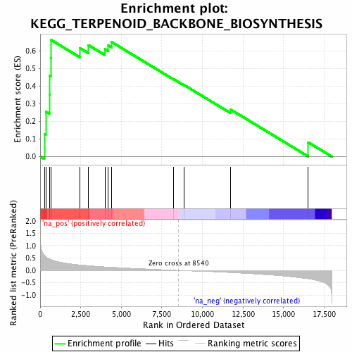
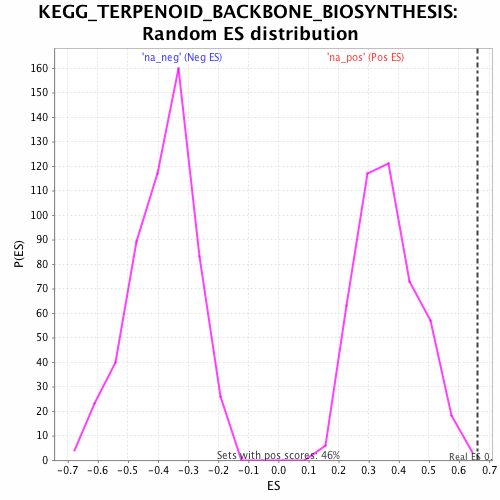

| | | Dataset | GSEA_Cushing_prerank_FC |
| Phenotype | NoPhenotypeAvailable |
| Upregulated in class | na_pos |
| GeneSet | KEGG_TERPENOID_BACKBONE_BIOSYNTHESIS |
| Enrichment Score (ES) | 0.66106635 |
| Normalized Enrichment Score (NES) | 1.8075773 |
| Nominal p-value | 0.0043668123 |
| FDR q-value | 0.008799006 |
| FWER p-Value | 0.109 |
Table: GSEA Results Summary

Fig 1: Enrichment plot: KEGG_TERPENOID_BACKBONE_BIOSYNTHESIS
Profile of the Running ES Score & Positions of GeneSet Members on the Rank Ordered List
| PROBE | GENE SYMBOL | GENE_TITLE | RANK IN GENE LIST | RANK METRIC SCORE | RUNNING ES | CORE ENRICHMENT | | 1 | DHDDS | | | 256 | 0.608 | 0.1293 | Yes |
| 2 | MVD | | | 344 | 0.551 | 0.2548 | Yes |
| 3 | ACAT2 | | | 575 | 0.462 | 0.3512 | Yes |
| 4 | IDI1 | | | 583 | 0.460 | 0.4595 | Yes |
| 5 | HMGCS1 | | | 649 | 0.442 | 0.5604 | Yes |
| 6 | PDSS2 | | | 682 | 0.433 | 0.6611 | Yes |
| 7 | FDPS | | | 2454 | 0.224 | 0.6154 | No |
| 8 | PMVK | | | 2976 | 0.193 | 0.6321 | No |
| 9 | MVK | | | 3988 | 0.145 | 0.6100 | No |
| 10 | HMGCR | | | 4194 | 0.137 | 0.6309 | No |
| 11 | GGPS1 | | | 4405 | 0.129 | 0.6497 | No |
| 12 | HMGCS2 | | | 8231 | 0.010 | 0.4390 | No |
| 13 | ACAT1 | | | 8875 | -0.011 | 0.4058 | No |
| 14 | PDSS1 | | | 11745 | -0.087 | 0.2666 | No |
| 15 | IDI2 | | | 16520 | -0.340 | 0.0811 | No |
Table: GSEA details [plain text format]

Fig 2: KEGG_TERPENOID_BACKBONE_BIOSYNTHESIS: Random ES distribution
Gene set null distribution of ES for KEGG_TERPENOID_BACKBONE_BIOSYNTHESIS